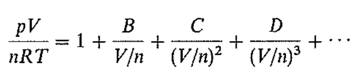
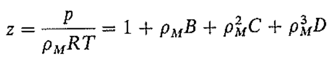

mccabe 단위 조작 1
화학공학자는 화학 물품을 제조하는 공정을 설계한다.
어떤 주제이든 다음 두 가지 사실에 기초하면 대부분의 프로세스(공정)을 실용적으로 설계할 수 있다.
1)개별 프로세스는 무수하지만, 그들은 기본 구성 단계인 단위조작으로 분할할 수 있다.
2)프로세스가 다르더라도 각 단위조작은 기법이 공통적이며 과학적 기초 원리가 동일하다.
대부분의 프로세스에서는 고체나 유체를 수송하고, 열이나 에너지를 전달하며 건조, 분쇄, 증류, 증발 등의 조작이 수행된다. 산업에 관계없이 프로세스에 이러한 조작이 응용되므로, 이들을 체계화하면 모든 프로세스를 간편하게 다룰 수 있다는 것이 단위조작의 기본 개념이다.
프로세스 중에서 화학적인 부분은 반응속도론이나 반응공학에서 다룬다. 반응물의 준비. 생성물의 분리 및 정제, 미반응물의 순환, 반응장치에서의 에너지 전달의 제어와 같은 물리적 단계에서는 주로 단위조작이 이용된다.
기본 개념: 단위조작의 토대가 되는 것은 기체 상태식, 물질 수지, 에너지 수지 등이다. 간단히 살펴보자.
기체상태식: 기체의 온도, 압력, 몰수, 부피는 상관관계가 있다. 이 함수 관계의 구체적 식을 상태방정식이라 한다. 정확한 상태방정식은 기체마다 달라지는데, 이에 근접하기 위한 다양한 상태방정식이 존재한다.
대표적으로 비리얼 식이 존재한다.

이를 간단하게 다음과 같이 나타내기도 한다.

이 z값이 1인 기체를 이상기체라고 한다.
물질 수지: 물질 도입량=물질 배출량이면 정상상태이다.
에너지 수지: 에너지 도입량=에너지 배출량+에너지 축적량